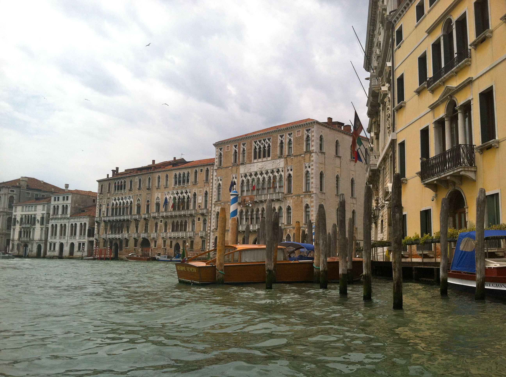

Venezia

Basic Facts about Venice:
Population: 263,996
Area: 160.1 sq miles
Province: Venice
Region: Veneto
Venice is a city in northeast Italy, made of 118 small islands. These islands are separated by canals, and linked by bridges.
It is a common misconception that everyone in Venice can only navigate through the city by a gondola. This is false. There have been an increasing number of bridges build in Venice over the years, in order to increase efficiency.
Venice is known for its production of Murano Glass, which can be seen through the city's greatest attraction!